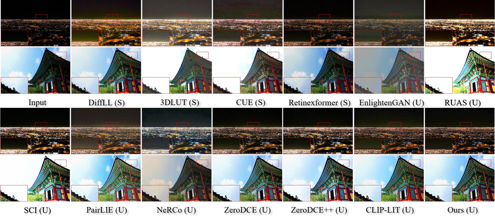
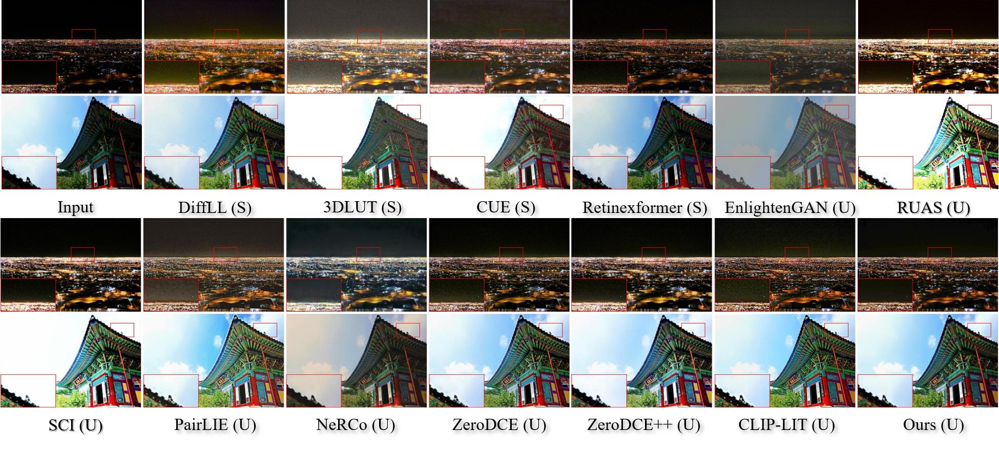

Method

The overall framework of our proposed DPLUT. In the training phase, DPLUT involves two main stages. (a) In the first stage, we learn a light adjustment lookup table (LLUT), which estimates pixel-wise curve parameters for yielding coarse normal-light images. (b) In the second stage, we learn a noise suppression lookup table (NLUT) by introducing knowledge of a diffusion model, aiming at removing the amplified noise and artifacts introduced from LLUT. In the testing phase, with the LLUT and NLUT, DPLUT can robustly recover perceptual-friendly results in real-time.
 
